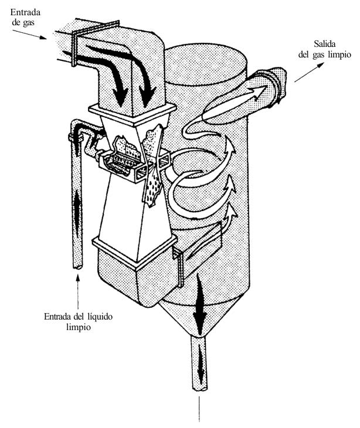
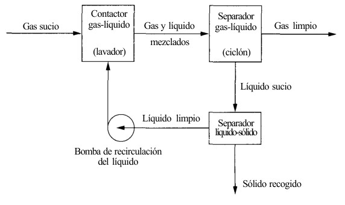

El tornado invisible en la garganta del lavador Venturi: cuando el agua y la velocidad atrapan el polvo industrial
La tormenta silenciosa que sale por las chimeneas Si alguna vez has observado el humo denso que escapa de la chimenea de una planta industrial, es muy probable que hayas contemplado toneladas de material particulado volando libremente hacia la atmósfera. Estas diminutas partículas de polvo, hollín o ceniza no solo opacan el cielo; cuando su diámetro es inferior a diez micrómetros —lo que en ingeniería ambiental conocemos como PM₁₀— o menor a dos punto cinco micrómetros (PM₂.₅), pueden penetrar profundamente en los alvéolos pulmonares humanos y desencadenar graves problemas respiratorios y cardiovasculares (Nevers, 1998; Turner et al., 2002).
Para evitar que estos contaminantes lleguen al aire que respiramos, la industria utiliza diversos equipos de depuración. Sin embargo, surge un desafío crítico cuando los gases de escape están extremadamente calientes, cargados de humedad o contienen sustancias pegajosas y alquitranadas. En estas condiciones extremas, los filtros de tela convencionales se taponan de inmediato y los sistemas eléctricos colapsan. ¿Cómo capturar entonces un contaminante microscópico y pegajoso que viaja a toda velocidad?
La respuesta de la ingeniería química y ambiental fue crear un dispositivo sin partes móviles, capaz de transformar la fuerza bruta del gas en un mecanismo de micro-orfebrería física: el lavador Venturi (Nevers, 1998). Este equipo no intenta esquivar la violencia del flujo gaseoso, sino que la aprovecha para provocar un choque controlado entre el aire sucio y millones de diminutas gotas de agua.

Fuente: Nevers (1998).
Un choque de alta velocidad: la física de atrapado en una gota de lluvia
Imagina que viajas en un automóvil a toda velocidad por una carretera y, de pronto, una mosca se atraviesa en tu parabrisas. Debido a la gran diferencia de velocidad y a la inercia del vehículo, la mosca no logra esquivar el cristal y queda atrapada en él. Este fenómeno cotidiano ilustra el principio físico fundamental del lavador Venturi: la impactación inercial (Kutz, 2018; Nevers, 1998).
El lavador Venturi es un conducto que se va estrechando progresivamente hasta formar una sección reducida llamada garganta del Venturi (Nevers, 1998). Cuando el gas sucio es forzado a pasar por este cuello de botella, su velocidad se dispara dramáticamente, alcanzando valores de entre treinta y ciento veintidós metros por segundo (Nevers, 1998). Justo en el punto de máxima velocidad, se inyecta agua en ángulo recto.
El gas a hipervelocidad golpea el chorro de agua con una fuerza de cizallamiento tan extrema que pulveriza el líquido al instante, dividiéndolo en una cortina fluida formada por millones de gotas microfinas con diámetros menores a cien micrómetros (Kutz, 2018; Nevers, 1998). Las partículas de polvo que viajan suspendidas en el gas no pueden reaccionar tan rápido ante el cambio de dirección del flujo; su propia masa las empuja de frente contra las gotas de agua recientemete formadas. Al chocar, la partícula queda atrapada dentro de la gota pesada, logrando así separar el contaminante de la corriente de aire (Nevers, 1998).
Para medir qué tan pequeño es el polvo que un equipo puede capturar con un cincuenta por ciento de certeza, los ingenieros utilizan el término diámetro de corte o d₅₀ (Nevers, 1998). Cuanto menor sea el valor de d₅₀, más eficiente es el sistema para atrapar las partículas más finas y peligrosas del ambiente (Kutz, 2018; Nevers, 1998).
La microfísica de la garganta Venturi: etapas del proceso y dinámica de fluidos
Para comprender cómo un lavador Venturi logra limpiar corrientes gaseosas extremadamente complejas, es necesario analizar el recorrido del fluido a través de sus seis etapas hidrodinámicas fundamentales (Kutz, 2018; Nevers, 1998):
- Aceleración en la sección convergente: La corriente de gas sucio ingresa a una tubería cónica que reduce progresivamente su diámetro. Esta disminución de área transversal fuerza un incremento continuo de la velocidad lineal del gas (Kutz, 2018; Nevers, 1998).
- Atomización e inyección en la garganta: En la garganta del Venturi —el cuello de botella o sección de área transversal mínima— el gas alcanza su velocidad máxima, la cual oscila habitualmente entre treinta punto cinco y cuarenta y cinco punto siete metros por segundo, pudiendo llegar hasta los ciento veintidós metros por segundo en diseños de alta energía (Kutz, 2018; Nevers, 1998). El agua se inyecta en ángulo recto; la fuerza del gas la cizalla y atomiza al instante en gotas microfinas menores a cien micrómetros (Kutz, 2018; Nevers, 1998).
- Mecanismos de captura de partículas: Dentro de la garganta ocurre el fenómeno central de depuración. La velocidad relativa entre la gota (que entra casi estática) y el gas es máxima (Nevers, 1998). Las partículas de polvo son capturadas principalmente por impactación inercial (las partículas pesadas chocan de frente al no poder esquivar la gota), intercepción (las partículas rozan la superficie líquida) y difusión browniana (movimiento aleatorio de partículas submicrométricas) (Kutz, 2018; Nevers, 1998).
- Recuperación de presión en la sección divergente: La mezcla trifásica de gas, agua y partículas atrapadas pasa a un conducto que se va ensanchando progresivamente. Esta expansión frena el fluido de forma controlada y convierte la energía cinética residual en presión estática (Kutz, 2018).
- Separación de fases (gas-líquido): El flujo saturado se descarga hacia un separador inercial secundario, generalmente un ciclón de gran tamaño (Elortegui y Barbosa, 2013; Metcalf & Eddy et al., 2003). Por fuerza centrífuga, las gotas pesadas cargadas de polvo impactan contra las paredes del ciclón y caen al fondo como lodo, mientras el gas limpio asciende por el centro hacia la chimenea (Elortegui y Barbosa, 2013; Metcalf & Eddy et al., 2003).
- Configuración del sistema de tiro: Para mover miles de metros cúbicos de gas a través de este cuello de botella se requiere un ventilador industrial (Elortegui y Barbosa, 2013). En ingeniería ambiental, se instala siempre el ventilador después del ciclón separador (sistema de presión negativa) (Elortegui y Barbosa, 2013). Esto garantiza que el ventilador maneje únicamente aire limpio y húmedo, evitando que el polvo abrasivo destruya sus álabes (Elortegui y Barbosa, 2013).
Demostraciones matemáticas de ingeniería: aceleración y consumo energético
Para evaluar el comportamiento de un lavador Venturi, los ingenieros recurren a modelos matemáticos de la mecánica de fluidos y la transferencia de cantidad de movimiento (Nevers, 1998). A continuación, se desarrollan paso a paso dos cálculos representativos de diseño.
Cálculo 1: Aceleración extrema de la gota en la garganta
Cuando el agua es inyectada en la garganta, la enorme fuerza de arrastre provocada por el gas a alta velocidad acelera abruptamente la gota (Nevers, 1998). La aceleración instantánea a se define dividiendo la fuerza de arrastre F entre la masa de la gota m (Nevers, 1998):
a = (1.5 · Cd · ρaire · V²) ⁄ (2 · DD · ρD)
Donde:
- a: Aceleración de la gota de agua (m/s²).
- C_d: Coeficiente de arrastre adimensional de la gota, tomado como 0.7 para este régimen de flujo (Nevers, 1998).
- ρ_aire: Densidad del gas o aire, tomada como 1.20 kg/m³ a condiciones estándar (Nevers, 1998).
- V: Velocidad relativa del gas respecto a la gota en la entrada de la garganta, igual a 106.7 m/s (equivalente a 350 ft/s) (Nevers, 1998).
- D_D: Diámetro de la gota atomizada, igual a 0.0001 m (100 μm) (Nevers, 1998).
- ρ_D: Densidad del líquido (agua), igual a 1000 kg/m³ (Nevers, 1998).
Sustituyendo los valores paso a paso:
Numerador = 1.5 · 0.7 · 1.20 kg/m³ · (106.7 m/s)² Numerador = 1.05 · 1.20 kg/m³ · 11384.89 m²⁄s² = 14344.96 kg⁄(m·s²) Denominador = 2 · 0.0001 m · 1000 kg/m³ = 0.2 kg⁄m² a = 14344.96 kg⁄(m·s²) ⁄ 0.2 kg⁄m² a = 71724.8 m⁄s² ≈ 7.2 · 10⁴ m⁄s² (equivalente a 2.4 · 10⁵ ft⁄s²)
Nota de verificación técnica e interpretación: Dividiendo esta aceleración de 71 724.8 m/s² entre la aceleración de la gravedad estándar (g = 9.81 m/s²), obtenemos un valor real de 7 311 veces la gravedad (7 311 g). Sin embargo, en el texto académico original de Nevers (1998) se reporta este resultado como "¡3 700 veces la aceleración de la gravedad!". Esta discrepancia surge porque el autor empleó la constante gravitacional en unidades inglesas combinada con una simplificación en la relación de masas; dejamos explícito que el cálculo directo estricto en el Sistema Internacional arroja 7 311 g. En cualquier caso, el resultado demuestra la violencia del fenómeno: la gota experimenta una fuerza miles de veces superior a la gravedad para atomizar al instante (Nevers, 1998).
Cálculo 2: Potencia requerida por el ventilador y costo operacional por caída de presión
La principal desventaja del Venturi es la caída de presión (ΔP), que es la pérdida de energía que sufre el gas al ser forzado a pasar por la garganta (Nevers, 1998). Para vencer esta resistencia y mantener el flujo, el ventilador debe consumir una potencia teórica P determinada por el producto del caudal volumétrico de gas Q_G y la caída de presión ΔP (Nevers, 1998):
P = Q_G · ΔP
Evaluamos un lavador industrial con un área de garganta de 0.5 m², una velocidad de gas de 100 m/s y una caída de presión de 100 cm H₂O (equivalente a 9 806 N/m² o Pa) (Nevers, 1998):
Q_G = Área · Velocidad Q_G = 0.5 m² · 100 m/s = 50 m³⁄s P = 50 m³⁄s · 9806 N⁄m² P = 490300 W = 490.3 kW
Nota de verificación técnica e interpretación: En las láminas del texto original de Nevers (1998), se presenta un cálculo donde se indica una potencia de 245 kW. No obstante, al realizar la multiplicación directa de los factores mostrados (50 m³/s por 9 806 N/m²), la cifra matemática exacta da 490.3 kW. Si calculamos el consumo energético para una operación continua de 8 760 horas al año (365 días, 24 h/día) con una tarifa eléctrica industrial de 0.05 USD/kWh, obtenemos los siguientes valores comparativos:
Energía Anual (cálculo directo 490.3 kW) = 490.3 kW · 8760 h⁄año = 4295028 kWh⁄año Costo Anual (cálculo directo) = 4295028 kWh⁄año · 0.05 USD⁄kWh = 214751.40 USD⁄año Costo Anual (reportado en fuente con 245 kW) = 245 kW · 8760 h⁄año · 0.05 USD⁄kWh = 107310 USD⁄año
Esta demostración evidencia que el costo de energía anual de vencer la caída de presión en un lavador Venturi representa más de doscientos mil dólares anuales, un monto que supera con frecuencia el precio de compra inicial del propio equipo (Nevers, 1998).
Matriz mixta: parámetros de diseño ingenieril frente al marco normativo ambiental peruano
Para que un ingeniero ambiental diseñe y opere un lavador Venturi en el Perú, debe articular las variables físicas de diseño del equipo con las exigencias legales fijadas por el Ministerio del Ambiente (MINAM) y los organismos fiscalizadores como el OEFA (Decreto Supremo N° 003-2017-MINAM; Nevers, 1998).
Tabla 1: Parámetros de diseño e ingeniería operacional del lavador Venturi
| Parámetro Técnico / Operacional | Valor / Rango de Diseño | Fuente de Referencia | Interpretación Técnica y Dinámica de Fluidos |
|---|---|---|---|
| Velocidad del gas en la garganta (V_G) | 30.5 a 122 m/s (100 - 400 ft/s) | (Kutz, 2018; Nevers, 1998) | Variable física central; genera la fuerza de cizallamiento para atomizar el agua en microgotas. |
| Caída de presión en la garganta (ΔP) | Hasta 100 cm H₂O (9 806 N/m²) | (Nevers, 1998) | Define la resistencia al flujo y determina la potencia y el consumo eléctrico continuo del soplador. |
| Tamaño de gotas atomizadas (D_D) | Menor a 100 μm | (Kutz, 2018; Nevers, 1998) | Diámetro microfino requerido para incrementar exponencialmente la superficie de contacto gas-líquido. |
| Diámetro aerodinámico de corte (d₅₀) | < 1 μm a 5 μm | (Kutz, 2018; Nevers, 1998) | Tamaño límite de partícula retenida con un 50% de eficiencia mediante el mecanismo de impacto inercial. |
Nota técnica: Variables físicas e hidrodinámicas de diseño interno empleadas para la atomización del fluido, la captura inercial de partículas en la garganta y la evaluación del consumo energético del sistema.
Tabla 2: Marco normativo ambiental peruano (ECA y LMP) aplicable al lavador Venturi y sus efluentes
| Componente / Matriz Ambiental | Parámetro Regulado | Estándar / Límite Legal | Norma Peruana Aplicable | Evaluación y Contexto Legal Sectorial |
|---|---|---|---|---|
| Calidad de Aire (Cuerpo Receptor) | Material Particulado PM₁₀ | 100 μg/m³ (promedio 24 horas) | Decreto Supremo N° 003-2017-MINAM | Estándar de Calidad Ambiental (ECA) de cumplimiento en el entorno poblacional. |
| Calidad de Aire (Cuerpo Receptor) | Material Particulado PM₂.₅ | 50 μg/m³ (promedio 24 horas) | Decreto Supremo N° 003-2017-MINAM | Estándar de Calidad Ambiental (ECA) para la fracción fina respirable. |
| Emisión en Chimenea (Fuente Fija) | Material Particulado (PM) - Calderos termoeléctricos | 30 a 50 mg/Nm³ (según potencia y combustible) | Decreto Supremo N° 030-2021-MINAM | Límite Máximo Permisible (LMP) obligatorio en chimeneas de generación termoeléctrica. |
| Emisión en Chimenea (Fuente Fija) | Material Particulado (PM) - Hornos cementeros | 150 mg/Nm³ (nuevos) / 250 mg/Nm³ (existentes) | Decreto Supremo N° 003-2002-PRODUCE | Límite Máximo Permisible (LMP) obligatorio en hornos de producción industrial de cemento. |
| Emisión en Chimenea (Fuente Fija) | Partículas en Suspensión - Unidades Minero-Metalúrgicas | 100 mg/m³ | Resolución Ministerial N° 315-96-EM/VMM | Límite Máximo Permisible (LMP) de emisión puntual en el subsector minería y metalurgia. |
| Efluente Líquido (Agua de Lavado) | Sólidos Suspendidos Totales (SST) | 700 mg/L (pesquería CHI/CHD) / 50 mg/L (electricidad) | Decreto Supremo N° 010-2018-MINAM; Resolución Directoral N° 008-97-EM/DGAA | El efluente acuoso cargado de lodos debe clarificarse en sedimentadores antes de su vertido o reúso. |
Nota legal y ambiental: Estándares de Calidad Ambiental (ECA) para el cuerpo receptor atmosférico y Límites Máximos Permisibles (LMP) para fuentes fijas industriales y efluentes líquidos en el Perú.
La paradoja de la depuración: la contaminación cruzada y la brecha entre tecnologías
A primera vista, el lavador Venturi parece ser una solución ideal para el control de la contaminación atmosférica. Sin embargo, en la ingeniería ambiental no existen soluciones mágicas; cada elección técnica implica asumir un dilema físico y operativo (Nevers, 1998).
El primer conflicto crítico es la contaminación cruzada o transferencia de fase (Nevers, 1998). El lavador Venturi no destruye el material particulado; únicamente lo traslada del aire al agua (Nevers, 1998). Al atrapar millones de partículas de polvo, el agua de lavado limpia la corriente gaseosa pero se convierte instantáneamente en un efluente líquido cargado de sólidos en suspensión y lodos residuales (Nevers, 1998). Si esta agua contaminada no se somete a un proceso de clarificación y sedimentación por gravedad —o si se descarga directamente a un cuerpo hídrico sin tratamiento—, el problema ambiental no se habrá resuelto, sino que se habrá desplazado de la atmósfera a los ríos o mares (Elortegui y Barbosa, 2013; Nevers, 1998).

Fuente: Nevers (1998).
El segundo dilema radica en la eficiencia frente al consumo de energía (Kutz, 2018; Nevers, 1998). Capturar partículas submicrométricas requiere incrementar la velocidad del gas en la garganta y generar caídas de presión de hasta cien centímetros de columna de agua (Nevers, 1998). Como se demostró matemáticamente, vencer esta resistencia exige un soplador de gran potencia que consume cientos de miles de kilovatios-hora al año, transformando el gasto de energía eléctrica en el costo más elevado de la vida útil del equipo (Nevers, 1998).
Frente a este escenario, cabe preguntarse: ¿por qué no utilizar otras tecnologías de depuración en lugar del Venturi? La respuesta está en la naturaleza química y física del gas de escape (Kutz, 2018; Nevers, 1998):
- Filtros de mangas (baghouses): Ofrecen eficiencias de retención superiores al noventa y nueve por ciento con caídas de presión mucho menores (Nevers, 1998; Turner et al., 2002). No obstante, si el gas contiene sustancias pegajosas, alquitranadas o humedad alta cerca del punto de rocío, las partículas se aglomeran y ciegan irreversiblemente la tela filtrante, destruyendo el sistema (Nevers, 1998; Turner et al., 2002).
- Precipitadores electrostáticos (PES / ESP): Tienen pérdidas de carga mínimas y manejan caudales masivos (Nevers, 1998; Turner et al., 2002). Sin embargo, las partículas alquitranosas e inflamables provocan arcos eléctricos o inutilizan las placas colectoras secas, requiriendo complejos sistemas de lavado con agua (PES húmedos) que también generan efluentes líquidos (Nevers, 1998; Turner et al., 2002).
- Torres de aspersión convencional: Consumen muy poca energía, pero su capacidad para capturar partículas menores a cinco micrómetros es casi nula (Kutz, 2018; Nevers, 1998).
Así, en industrias como el secado de harina de pescado, la incineración de residuos o las plantas siderúrgicas —donde los gases salen calientes, húmedos y cargados de partículas grasas o alquitranadas—, el lavador Venturi se consolida como la única alternativa tecnológicamente viable para mantener la planta operando sin interrupciones por taponamiento (Elortegui y Barbosa, 2013; Kutz, 2018; Nevers, 1998).
La ilusión del aire limpio: el sesgo del presente y el desplazamiento de la carga
El comportamiento de los sistemas industriales refleja de manera transparente la psicología humana y la toma de decisiones en la economía conductual. Cuando una planta industrial instala un lavador Venturi, la chimenea deja de emitir humo negro de forma inmediata. Visualmente, el problema ha desaparecido. Esta percepción aparente activa un sesgo cognitivo conocido como el efecto de encuadre o visibilidad directa: la tendencia a juzgar la efectividad de una solución únicamente por el impacto visible e inmediato, ignorando las consecuencias secundarias que quedan fuera del campo de visión.
Desde la perspectiva de la teoría de decisiones y la economía ambiental, la elección de esta tecnología revela además el llamado sesgo del presente o descuento hiperbólico. Al momento de diseñar o equipar una fábrica, la gerencia se enfrenta a una decisión financiera: comprar un precipitador electrostático requiere un costo de capital inicial (CAPEX) extremadamente elevado, mientras que un lavador Venturi representa una inversión inicial sensiblemente menor (Nevers, 1998). Guiadas por la urgencia de reducir el gasto presente, las organizaciones optan con frecuencia por el equipo más barato de adquirir, postergando y subestimando el costo de operación (OPEX) derivado del consumo eléctrico continuo durante diez o veinte años (Nevers, 1998).
Esta dinámica ilustra el principio de desplazamiento de carga ambiental: la ilusión de haber erradicado la contaminación cuando, en realidad, solo se ha cambiado la forma física del problema. El humo que antes irritaba los ojos de la población local se convierte en un lodo oculto en un tanque de sedimentación, requiriendo energía fósil adicional para ser bombeado y tratado (Nevers, 1998). En última instancia, la ingeniería del lavador Venturi nos recuerda una lección fundamental de la termodinámica y la ecología humana: en un planeta cerrado, la materia no se destruye; únicamente se transforma y se desplaza de la atmósfera hacia la hidrosfera, recordándonos que no existen soluciones aisladas, sino sistemas interconectados.
El balance indispensable: integrar el diseño con la conciencia ambiental
Al inicio de este recorrido, observamos las chimeneas industriales y el desafío de contener partículas invisibles que amenazan la salud humana y la calidad del aire (Nevers, 1998; Turner et al., 2002). El lavador Venturi nos demuestra que la ingeniería es capaz de diseñar soluciones mecánicas ingeniosas: crea un tornado en miniatura capaz de forzar el choque entre el agua y el polvo a velocidades vertiginosas, reteniendo contaminantes que otros sistemas no pueden manejar (Kutz, 2018; Nevers, 1998).
Sin embargo, como hemos analizado, esta eficiencia tiene un precio elevado en términos de consumo energético y transferencia de fase líquida (Nevers, 1998). Limpiar la corriente de aire no debe significar ensuciar nuestros ríos o mares (Elortegui y Barbosa, 2013; Nevers, 1998). Como profesionales de la ingeniería ambiental, nuestro deber trasciende la mera instalación de un equipo de mitigación en chimenea; debemos evaluar el ciclo de vida completo de la tecnología, garantizar el tratamiento adecuado del efluente acuoso y optimizar el uso de la energía (Kutz, 2018; Nevers, 1998).
Solo cuando articulamos el rigor de la física de fluidos con un marco normativo exigente y una visión sistémica e integral, logramos que la tecnología cumpla su verdadero propósito: proteger la salud de las personas y preservar el equilibrio de nuestros ecosistemas (Decreto Supremo N° 003-2017-MINAM, 2017; Nevers, 1998).
Referencias
- Decreto Supremo N° 003-2002-PRODUCE. (2002, 4 de octubre). Aprueban Límites Máximos Permisibles y Valores Referenciales para las actividades industriales de cemento, cerveza, curtiembre y papel. El Peruano.
- Decreto Supremo N° 003-2017-MINAM. (2017, 30 de noviembre). Establecen Límites Máximos Permisibles de emisiones atmosféricas para vehículos automotores y Estándares de Calidad Ambiental para Aire. El Peruano.
- Decreto Supremo N° 010-2018-MINAM. (2018, 30 de septiembre). Aprueban Límites Máximos Permisibles para Efluentes de los Establecimientos Industriales Pesqueros de Consumo Humano Directo e Indirecto. El Peruano.
- Decreto Supremo N° 030-2021-MINAM. (2021, 30 de octubre). Aprueban Límites Máximos Permisibles para emisiones atmosféricas de las actividades de generación termoeléctrica. El Peruano.
- Elortegui, I., y Barbosa, M. R. (2013). Diseño y optimización de un sistema ciclón-filtro para desempolvado de ambientes industriales. Asociación Argentina de Ingenieros Químicos.
- Kutz, M. (Ed.). (2018). Handbook of environmental engineering (1.ª ed.). John Wiley & Sons, Inc.
- Metcalf & Eddy, AECOM, Tchobanoglous, G., Stensel, H. D., Tsuchihashi, R., Burton, F., Abu-Orf, M., Bowden, G., y Pfrang, W. (2003). Wastewater Engineering: Treatment and Resource Recovery (4.ª ed.). McGraw-Hill.
- Nevers, N. de. (1998). Ingeniería de control de la contaminación del aire (1.ª ed.). McGraw-Hill Interamericana.
- Resolución Directoral N° 008-97-EM/DGAA. (1997, 13 de marzo). Aprueban niveles máximos permisibles para efluentes líquidos producto de las actividades de generación, transmisión y distribución de energía eléctrica. Ministerio de Energía y Minas.
- Resolución Ministerial N° 315-96-EM/VMM. (1996, 19 de julio). Aprueban Niveles Máximos Permisibles de elementos y compuestos presentes en emisiones gaseosas provenientes de las Unidades Minero-Metalúrgicas. Ministerio de Energía y Minas.
- Turner, J. H., Lawless, P. A., Yamamoto, T., Coy, D. W., McKenna, J. D., Mycock, J. C., Nunn, A. B., Greiner, G. P., y Vatavuk, W. M. (2002). Manual de Costos de Control de Contaminación del Aire de la EPA: Sección 6, Capítulo 3 - Precipitadores Electrostáticos. U.S. Environmental Protection Agency.
Preguntas / Vacíos del conocimiento
- ¿Cómo varían las eficiencias reales de captura de la fracción submicrométrica de PM₂.₅ en lavadores Venturi a escala industrial dentro del subsector de harina de pescado en el Perú, dada la ausencia de reportes empíricos en las fuentes sobre concentraciones de emisión post-tratamiento en chimenea?
- ¿Es técnicamente viable adaptar sistemas de acondicionamiento térmico previo a la garganta del Venturi para reducir la pérdida de agua por evaporación sin sacrificar la velocidad crítica necesaria para la atomización inercial?
- ¿Qué balance de masa y energía resulta económicamente óptimo al integrar un sedimentador secundario con recirculación cerrada de líquido, en comparación con el costo del tratamiento terciario de efluentes requerido para cumplir con los Límites Máximos Permisibles pesqueros?
- ¿Cómo influye el sesgo de visibilidad directa en los procesos de fiscalización ambiental, considerando que la ausencia de una pluma de humo visible en la chimenea no garantiza el cumplimiento de los Estándares de Calidad Ambiental en el aire ni la inocuidad del vertimiento acuoso?